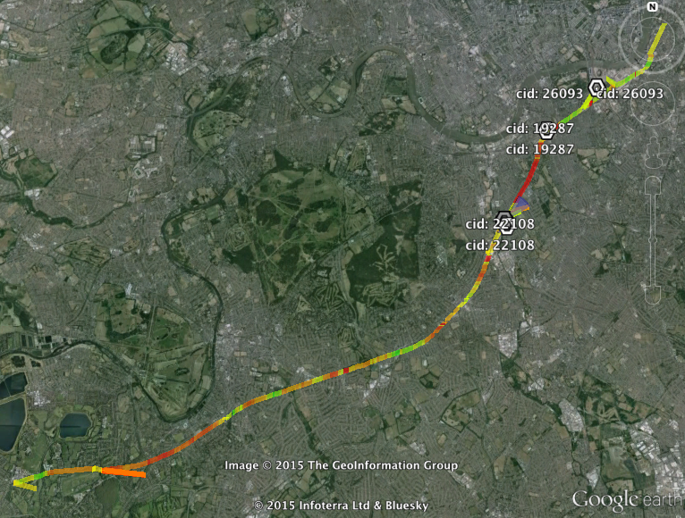
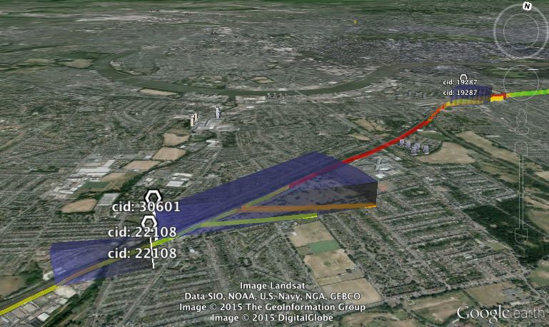
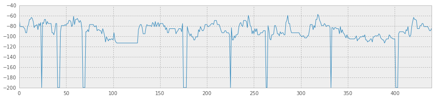
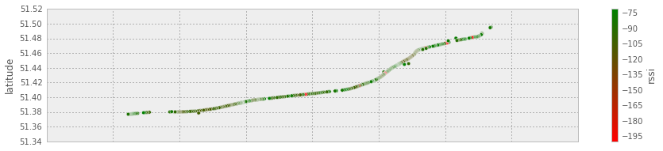

Signal Strength
James Uther
2015-07-09
Another thumb-twiddling commute into the city, with only another listicle
to entertain, and once again, no mobile signal. I tweet in frustration:
Which received an actual reply!

Challenge accepted.
So, I have an android phone, and android can allow access to all sorts of link status information. You can add handlers to an Activity to listen to signal strength changes, cell changes, and so on. Now, I could write something myself that logs these along with the GPS location, but surely someone has already done this? Yes!
My return journey duely tracked (with extra power supplied by a laptop ‐ gods this thing chews batteries!) it turns out that the signal tracker can generate a few kinds of files, including some funky KML which would show this:

Including blue wedge things that I don't understand

Anyway, it'll also give good old CSVs, which look like:
_id,latitude,longitude,rssi,logdate,mcc,mnc,lac,cellid,site_lat,site_lng,tech,ber,callstate,roaming,datastate,dataactivity,make,model,mobilerxbytes,mobiletxbytes,totalrxbytes,totaltxbytes,snr,notes,cellname
1,51495581,-115382,-65,3 Jul 2015 17:22:55,234,20,99,16756,0,0,HSPA+,0,IDLE,No,CONNECTED,INOUT,LGE,Nexus 4,54273,13992,54273,13992,-1,,
2,51495479,-115432,-81,3 Jul 2015 17:22:59,234,20,99,16756,0,0,HSPA+,0,IDLE,No,CONNECTED,INOUT,LGE,Nexus 4,18893,39644,18893,39644,-1,,
Break out ipython notebook
%matplotlib inline
import math
import pandas as pd
import matplotlib.pyplot as plt
import matplotlib
import numpy as np
Let's pull in the csv file, and in particular the latitude, longitude and
rssi columns, where
RSSI
is a measure of signal strength.
pd.set_option('display.mpl_style', 'default')
plt.rcParams['figure.figsize'] = (15, 3)
plt.rcParams['font.family'] = 'sans-serif'
trip = pd.read_csv('export_150703175551.csv', usecols=['rssi','logdate','latitude','longitude'])
trip['longitude'] = trip['longitude']/1000000
trip['latitude'] = trip['latitude']/1000000
trip[:2]
‐ returns
latitude longitude rssi logdate
0 51.495581 -0.115382 -65 3 Jul 2015 17:22:55
1 51.495479 -0.115432 -81 3 Jul 2015 17:22:59
Then:
trip['rssi'].plot(figsize=(15, 3))
rssigraph

So we have some areas of significantly bad signal strength. Let's focus in on rssi < -70, which in the iPhone at least triggers searching for a new cell tower.
bad_signal = trip[trip['rssi'] < -70]
bad_signal = bad_signal.drop('logdate', 1)
r_g = (matplotlib.colors.colorConverter.colors['r'],
matplotlib.colors.colorConverter.colors['g'])
cmap = matplotlib.colors.LinearSegmentedColormap.from_list('clist', r_g)
bad_signal.plot(kind='scatter', x='longitude', y='latitude', c='rssi', cmap=cmap)
rssimap

We know have a map of points on my trip with bad signal. But they want postcodes. I have the lat/lng position of these, and could just go for a reverse geocoder, but that'd be 400ish requests and probably get my blacklisted, so instead, i'll just get ALL THE POSTCODZ!
postcodes = pd.read_csv('ONSPD_MAY_2015_UK.csv', header=0, usecols=['pcd','lat','long'])
postcodes[:2]
‐ returns
pcd lat long
0 AB1 0AA 57.101474 -2.242851
1 AB1 0AB 57.102554 -2.246308
So we have something like a million postcodes and their central lat/lng. I could do something fancy, but 'when in doubt, use brute force' so for each of my points i'll grab the postcodes from the list that are within a delta of that point, then from that subset find the closest to that point, and consider that to be the postcode for that point. And then we want a set of all those postcodes:
def get_near_pcodes(lat, lng, p):
'''Whittle down full list to those within factor of lat,lng'''
d = 0.01
return p[(p['lat'] > lat-d) & (p['lat'] < lat+d) & (p['long'] > lng-d) & (p['long'] < lng+d)].copy()
def dist(x1, y1, x2, y2):
'''dist from x1,y1 to x2,y2'''
x = abs(x2-x1)
x = x*x
y = abs(y2-y1)
y = y*y
return math.sqrt(x + y)
def dodist(s):
'''Return the nearest postcode to the given lat,lng'''
y = s['longitude']
x = s['latitude']
np = get_near_pcodes(x, y, postcodes)
# add a 'd' column, the distance between x,y and the postcode
withd = np.apply(lambda l: pd.Series([l['pcd'],dist(l['lat'], l['long'], x, y)],index=['pcd','d']),axis=1)
# and find the minimum one.
p = withd[withd['d'] == withd['d'].min()].iloc[0,0]
return p
pcds = bad_signal.apply(dodist,axis=1)
set(pcds.values)
‐ returns
{'KT100AE', 'KT108AL', 'KT108BL', 'KT108DT', 'KT108DX', 'KT108HD', 'KT108HE', 'KT109AL', 'KT109AN', 'KT109AT', 'KT109AW', 'KT123ED', 'KT123PB', 'KT123PS', 'KT123RW', 'KT3 3AB', 'KT3 3GA', 'KT3 3HB', 'KT3 3HQ', 'KT3 3PH', 'KT3 3QT', 'KT3 3QU', 'KT3 3RH', 'KT3 3RR', 'KT3 3TF', 'KT3 4AZ', 'KT3 4DF', 'KT3 4EJ', 'KT3 4HG', 'KT3 4HL', 'KT3 4HN', 'KT3 4HP', 'KT3 4HR', 'KT3 4JD', 'KT3 4JG', 'KT3 5AQ', 'KT3 5DA', 'KT3 5DE', 'KT5 8AA', 'KT5 8DF', 'KT5 8DT', 'KT5 8DY', 'KT5 8EG', 'KT5 8EH', 'KT5 8EJ', 'KT5 8EL', 'KT5 8EQ', 'KT5 8ER', 'KT5 8ES', 'KT5 8ET', 'KT5 8EU', 'KT5 8HQ', 'KT5 8HR', 'KT5 8LS', 'KT5 8LT', 'KT5 8NS', 'KT5 8NX', 'KT6 4JN', 'KT6 4NH', 'KT6 4NY', 'KT6 4PB', 'KT6 4PE', 'KT6 4PF', 'KT6 4PN', 'KT6 4PX', 'KT6 4PY', 'KT6 5BA', 'KT6 5DL', 'KT6 5DN', 'KT6 5ED', 'KT6 5JN', 'KT6 5JT', 'KT6 5JX', 'KT6 5LF', 'KT6 5LJ', 'KT6 5LQ', 'KT6 5NU', 'KT6 6AB', 'KT6 6BY', 'KT6 6DA', 'KT6 6HT', 'KT6 6JS', 'KT6 6RP', 'KT6 6RY', 'KT6 6SH', 'KT7 0AF', 'KT7 0AN', 'KT7 0AZ', 'KT7 0BG', 'KT7 0DS', 'KT7 0DZ', 'KT7 0EF', 'KT7 0ET', 'KT7 0EY', 'KT7 0FA', 'KT7 0HL', 'KT7 0UZ', 'KT7 0WB', 'SE115AW', 'SE115HZ', 'SE116NF', 'SE116NG', 'SE116NQ', 'SW111DE', 'SW111RG', 'SW111RZ', 'SW111UA', 'SW111UP', 'SW111UW', 'SW111UZ', 'SW112DN', 'SW112HA', 'SW112HT', 'SW112JL', 'SW112JQ', 'SW112PA', 'SW112TH', 'SW112TJ', 'SW115AY', 'SW115BY', 'SW115DZ', 'SW115EU', 'SW115EX', 'SW115EZ', 'SW115HA', 'SW115HL', 'SW115HQ', 'SW115UX', 'SW115UY', 'SW182SQ', 'SW182SS', 'SW182SY', 'SW182SZ', 'SW182TA', 'SW182TF', 'SW182TQ', 'SW182ZZ', 'SW183DA', 'SW183DD', 'SW183DE', 'SW183DF', 'SW183DG', 'SW183DJ', 'SW183DR', 'SW183DU', 'SW183HP', 'SW183JA', 'SW183LW', 'SW183NY', 'SW183SA', 'SW184ES', 'SW184ET', 'SW184EU', 'SW184HD', 'SW184RL', 'SW184SP', 'SW193RL', 'SW194BZ', 'SW194DL', 'SW194EN', 'SW194ET', 'SW194EX', 'SW194HA', 'SW194HL', 'SW194JP', 'SW197JP', 'SW197JY', 'SW197LE', 'SW197LH', 'SW197LJ', 'SW197NH', 'SW198DR', 'SW198EG', 'SW198EX', 'SW198HP', 'SW198HR', 'SW198HW', 'SW198JA', 'SW198JN', 'SW198LG', 'SW198LJ', 'SW198NN', 'SW198UL', 'SW198YA', 'SW198ZB', 'SW200AL', 'SW200AN', 'SW200BH', 'SW200JZ', 'SW200TT', 'SW200UL', 'SW200UN', 'SW200UW', 'SW208DN', 'SW208DW', 'SW208FB', 'SW208PT', 'SW208PX', 'SW208RN', 'SW208RP', 'SW208RW', 'SW208RX', 'SW208SA', 'SW208SH', 'SW208SJ', 'SW208SQ', 'SW8 1RP', 'SW8 1RQ', 'SW8 1RR', 'SW8 1SA', 'SW8 1SR', 'SW8 2LF', 'SW8 2LT', 'SW8 3NP', 'SW8 3QG', 'SW8 4JX', 'SW8 4JY', 'SW8 4LS', 'SW8 5AA', 'SW8 5BL', 'SW8 5BS', 'SW8 5EE', 'SW8 5EF', 'SW8 5JB', 'SW8 5PA', 'SW8 5PP'}
You're welcome!
(Originally here)